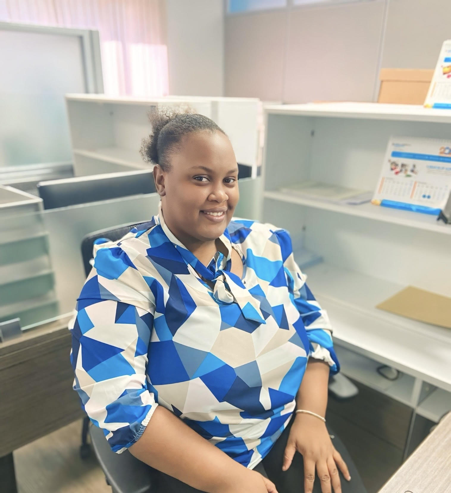

Introduction

Portfolio Introduction
Welcome to my portfolio, which highlights the key components of my journey in the HRM/AISM Seminar 2024-2025. This collection showcases my growth, contributions, and reflections throughout the seminar. The artifacts included represent my active engagement, dedication, and the lessons learned, all of which have equipped me with valuable skills in human resource management and organizational development.
Updated Resume/LinkedIn Profile
My updated resume and LinkedIn profile reflect the professional development I’ve experienced during the seminar. They showcase the new skills and competencies I’ve gained, positioning me for future career opportunities.
Assignment Contribution
I actively participated in key seminar assignments, including fundraising efforts such as the rally sheet and cake order sheet. My significant contributions raising $16,000 and securing 15 cake orders demonstrate my dedication to the seminar's success and my ability to manage tasks efficiently.
Reflection on Learning
This reflective essay highlights the key lessons and skills I have acquired, such as the importance of teamwork, effective communication, and goal setting. It encapsulates my growth and how these lessons have shaped my approach to HRM.
Professional Photo
The inclusion of a professional photo underscores the importance of personal branding and professionalism, qualities emphasized throughout the seminar as essential in the workplace.
Role in Accounts Committee
My role in the Accounts Committee involved managing funds, collecting dues, and ensuring financial transparency during seminar events. This experience enhanced my organizational skills, attention to detail, and ability to work collaboratively under pressure.
This portfolio serves as a testament to the knowledge, skills, and personal growth I have achieved during the HRM/AISM Seminar 2024-2025. Each component reflects my commitment to learning, my contributions to the seminar, and my readiness to apply the principles of HRM in future endeavors.
Introduction
This portfolio serves as a comprehensive record of my journey through the HRM/AISM Seminar 2024-2025, showcasing the knowledge, skills, and experiences I have gained during this transformative period. The following components are included, each playing a significant role in my personal and professional development:
Resume
My resume provides a detailed overview of my academic and professional background, including my experiences in education and insurance. It highlights my qualifications and readiness to transition into a professional HRM career.
Evidence of Participation in Seminar Activities
This section includes documentation of my active engagement in seminar events and activities, such as attendance records and pictures. These demonstrate my dedication to continuous learning and professional development.
Assignments
The assignments included in this portfolio reflect my active participation in the seminar’s fundraising efforts. These tasks required effective communication, organization, and persistence.
Reflections
The reflections capture my personal growth and the lessons learned throughout the seminar. They highlight how I have improved my teamwork and goal-setting abilities, which are essential for navigating complex projects in HRM.
Professional Photo
Included in this portfolio is a professional photo that reflects my commitment to presenting myself with confidence and professionalism.
Contributions to Committee Work
My involvement in committee work illustrates my commitment to collaboration and supporting the
Artifact 1
Presentation on the Grievance Process
Mr. Yohan Ricketts delivered an insightful presentation on the grievance process, offering valuable knowledge and practical guidance on a fundamental aspect of human resource management. His session explored the steps involved in addressing grievances and the importance of a structured approach in resolving workplace conflicts. This presentation was particularly enlightening, as it reinforced the significance of fair and transparent practices in promoting employee satisfaction and organizational harmony.
One of the key takeaways from Mr. Ricketts’ presentation was the systematic breakdown of the grievance process into clear and actionable steps. He began by emphasizing the importance of informal discussions as the initial stage. This step allows for open communication between the aggrieved employee and their supervisor, fostering a resolution in a less formal and more approachable setting. I appreciated his emphasis on how this stage can often prevent minor issues from escalating into major disputes, saving time and resources for all parties involved.
The second step Mr. Ricketts discussed was the formal submission of a grievance. He explained that this stage typically involves documenting the issue in writing, ensuring that there is a clear record of the complaint. He highlighted how this step is crucial for accountability and serves as the foundation for the subsequent investigation. This aspect resonated with me, as it underscores the importance of clarity and precision in addressing grievances.
The third stage, the investigation, was described as the most critical and time-intensive step. Mr. Ricketts detailed how HR professionals and managers must approach this phase with impartiality and thoroughness, gathering all relevant facts and perspectives before making any determinations. His emphasis on fairness and adherence to organizational policies and labour laws reinforced the ethical responsibilities of HR practitioners.
Finally, Mr. Ricketts discussed the resolution phase, where the findings of the investigation are communicated, and appropriate actions are taken to address the grievance. He stressed the need for follow-up, ensuring that the resolution is effectively implemented and that employees feel their concerns have been genuinely addressed. This step, according to him, plays a pivotal role in rebuilding trust and maintaining workplace morale.
Throughout the presentation, Mr. Ricketts also emphasized the broader benefits of a well-managed grievance process. He explained how a structured approach not only resolves conflict but also strengthens organizational culture by demonstrating a commitment to fairness and transparency. His use of real-world examples made these concepts relatable and actionable, providing a clear roadmap for navigating complex workplace issues.
Reflecting on Mr. Ricketts’ session, I am inspired by his deep understanding of the grievance process and the practical strategies he shared. His presentation has enhanced my awareness of the importance of each step and the role of HR professionals in ensuring fairness and equity in resolving workplace disputes. This knowledge will undoubtedly influence my approach to conflict management and my ability to contribute positively to any organization.
Visual Highlights
My Resume
Click the link below to View My Resume:
Preview:
Artifact 2
Fundraising Contributions During the HRM/AISM Seminar 2024-2025
During the HRM/AISM Seminar 2024-2025, I was actively involved in completing two key assignments that significantly contributed to the seminar’s fundraising efforts: a rally sheet collection and a cake order sheet. Both assignments required initiative, persistence, and effective communication skills to ensure their successful completion.
Rally Sheet Collection: I exceeded the minimum fundraising target of $3,000 by collecting $16,000. This accomplishment involved professional and persuasive interactions with donors, effectively communicating the seminar’s goals and value.
Cake Order Sheet: I successfully secured 15 cake orders by reaching out to family, friends, and colleagues, ensuring accurate record-keeping and clear communication throughout the process.
My contributions through these assignments greatly supported the seminar’s budget, demonstrating my ability to achieve and exceed organizational objectives.
Visual Highlights
Artifact 3&4
Reflection on My Learning in the Seminar
Participating in the HRM/AISM Seminar 2024-2025 has been a transformative experience, offering valuable lessons and insights that will remain with me throughout my academic and professional journey. The seminar provided an excellent platform for developing essential skills, fostering teamwork, and gaining a deeper understanding of the intricacies involved in organizing and executing successful events.
One of the most significant lessons I have learned is the importance of effective communication and collaboration. The seminar brought together individuals with diverse strengths and perspectives, all working toward a common goal. Through committee meetings and assignments, I realized that open communication and mutual respect are crucial for fostering a productive environment. Working as part of the Accounts Committee taught me how to coordinate effectively with others, share responsibilities, and support team members in achieving shared objectives.
Another critical area of learning has been financial management. My role required me to collect funds, maintain accurate records, and ensure transparency in all transactions. These responsibilities underscored the importance of accountability and attention to detail when handling finances. I have developed a newfound appreciation for the effort and precision required to manage resources effectively, a skill that will undoubtedly be valuable in my future endeavors.
The seminar also emphasized the significance of setting goals and working consistently to achieve them. From fundraising assignments to planning events, I have witnessed how smaller tasks contribute to the larger vision. This realization has encouraged me to adopt a more structured approach to tackling challenges, breaking them into manageable steps to ensure steady progress.
My Professional Photo

Artifact 5
Documents Used
Click on the link below to preview each document:
Preview:
Contact